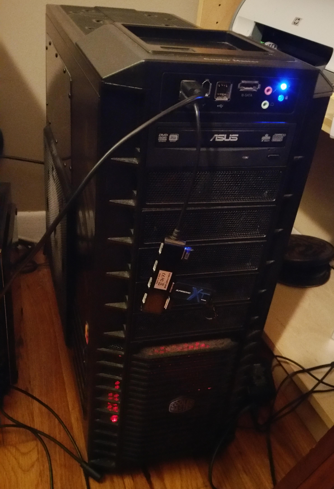

First assembled in 2010 by a friend and I. I have upgraded the hard drive, ram, video card and fans. Most of my work is done on this computer.
- Graphics: MSI Gaming N760 TF 2GD5/OC G-SYNC Support GeForce GTX 760 2GB 256-Bit GDDR5 PCI Express 3.0 SLI Support Video Card
- Storage: Samsung Electronics 840 EVO-Series 500GB 2.5-Inch SATA III Internal Solid State Drive MZ-7TE500BW
- Memory: 2Gx4 GSKILL F3-10666CL8D-4GBRM 240-Pin Unbuffered DDR3 SDRAM DDR3 1333 1.5V Cas Latency: 8
- Power Supply: CORSAIR CMPSU-1000HX 1000W RT
- Motherboard: ASUS M4N98TD EVO AM3 RT
- Case: Coolermaster RC-932-KKN1-GP BK RT
- CPU: AMD PH II X6 1055T 2.8 G AM3 RT
- Dual Boot: Windows 7 and Xubuntu 14.04.3